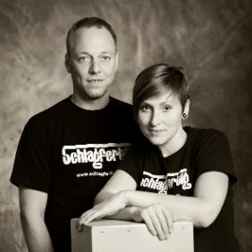

Am Sonntag, den 06.11.2016 findet wieder ein Cajon-Workshop mit Cajonbau und Cajonspielen statt.
Von 9.00-11.00 Uhr kann ein Cajon unter der Leitung von Sanna Hallmann gebaut werden; besondere Vorkenntnisse sind dabei nicht erforderlich.
Von 11.30 bis 15.00 Uhr vermittelt Martin Röttger AnfängerInnen und TeilnehmerInnen mit Vorkenntnissen im Spiel-Workshop Schlagtechniken, Schlagzeug-Sound und die Nutzung des Cajon als rhythmische Basis für andere Instrumente. Es werden auf Wunsch auch die Themen Cajon-Mikrofonierung, Add-ons und Sound-Tuning behandelt.
Kinder in Begleitung ihrer Eltern sind herzlich willkommen!
Anmeldungen unter Telefon 040 796 72 22 oder Email info@kulturhaus-suederelbe.de